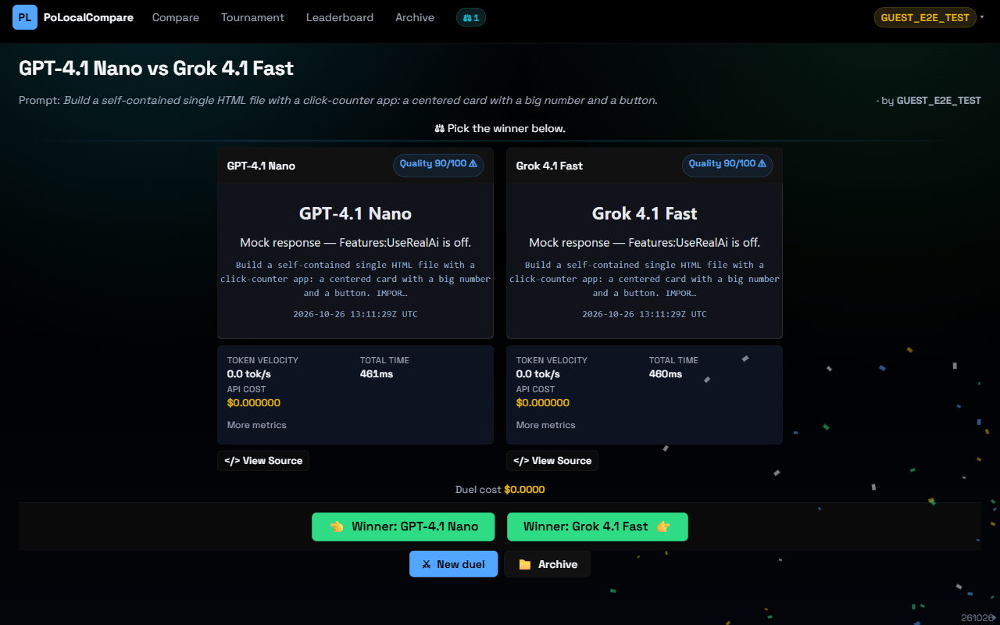
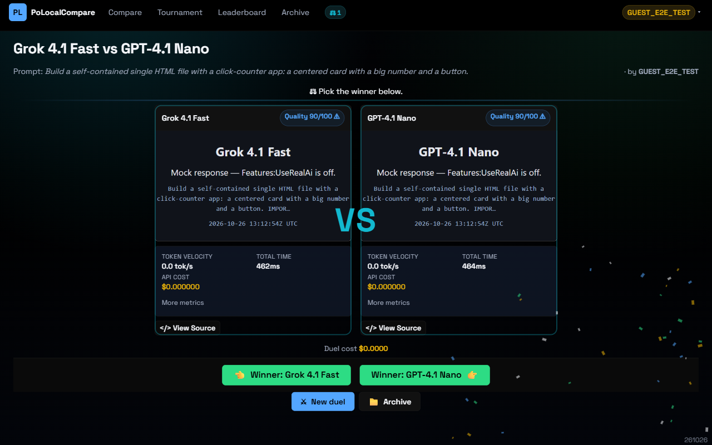
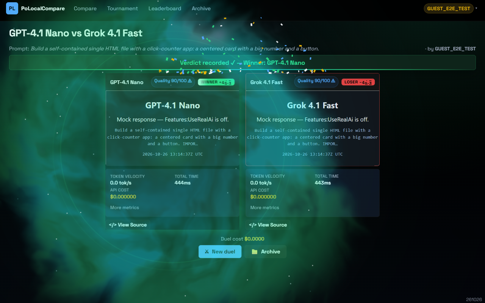
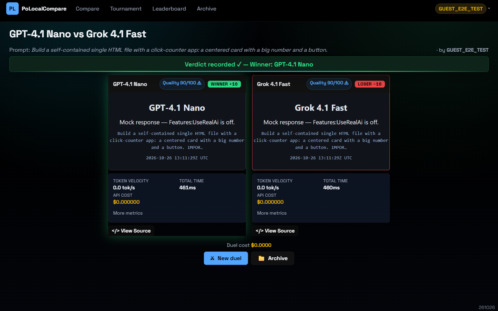
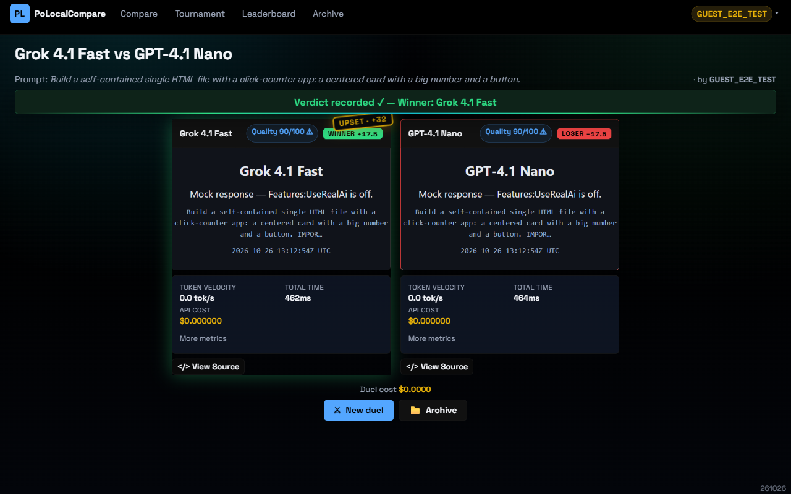
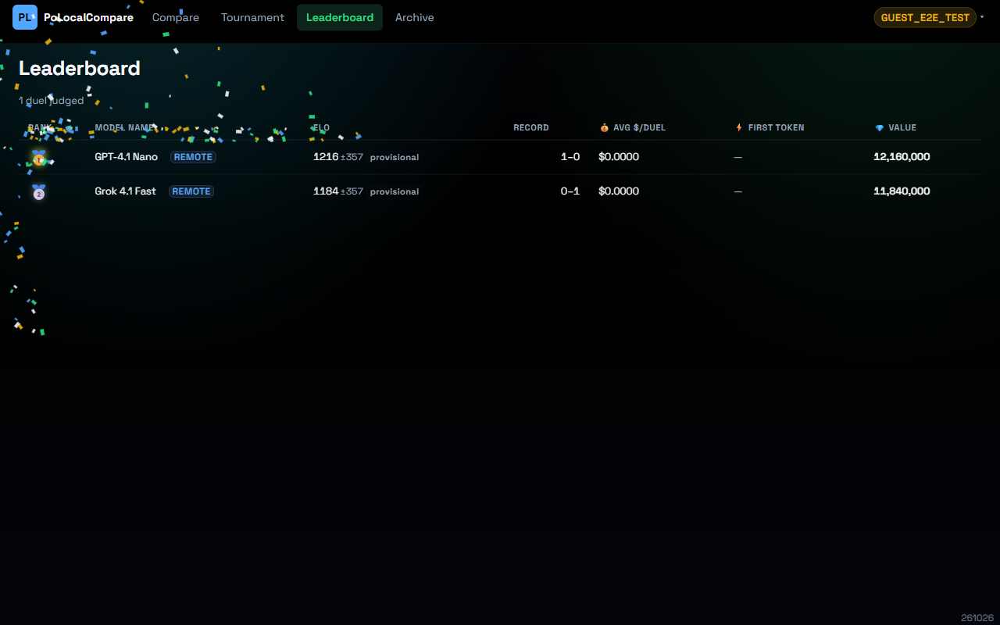
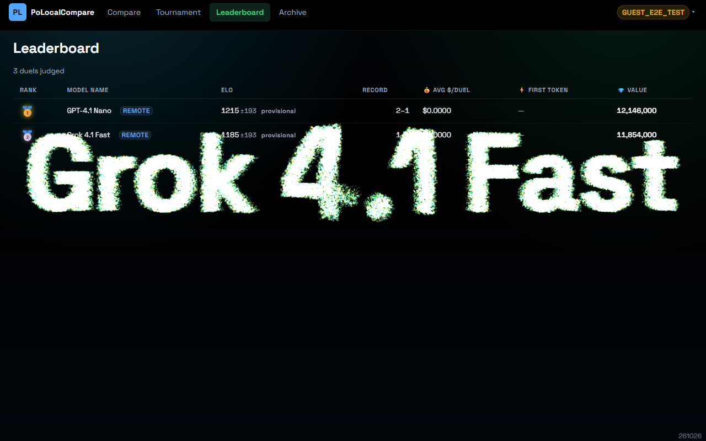
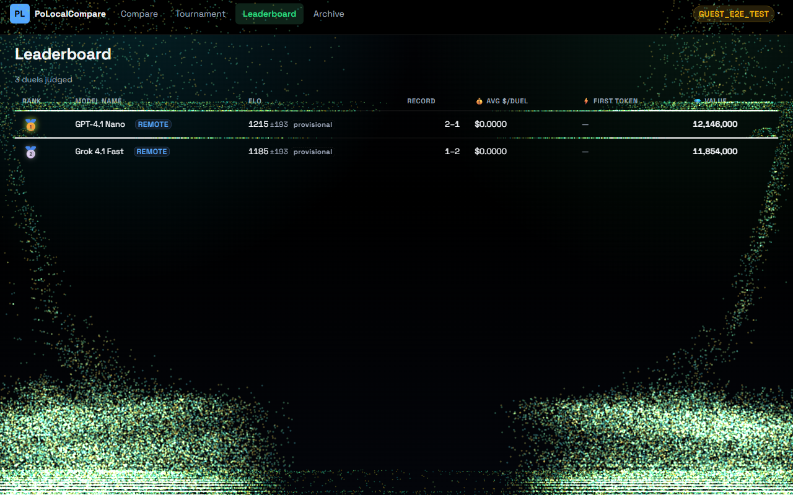
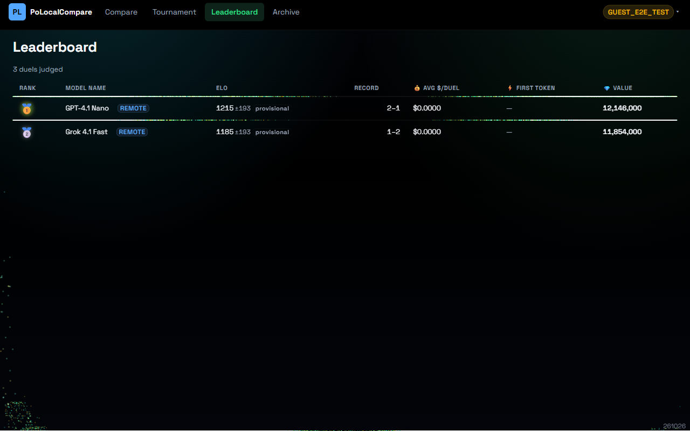

2026-10-26. Captured in real Chrome with WebGPU at 1280×800, dark theme, against the local app with mock inference
(Features:UseRealAi=false) and human votes, so no paid calls were made. Stills of moving effects:
each frame is a fixed offset into its moment. The sound (G2, G3, G5, the cues under G1/G4/G6–G8) cannot be shown here.
G1: a live duel opens
Before

The panels arrive by the existing slot morph, with nothing marking the start of the duel.After: VS slam

520 ms in: the VS mark drops in from 3× its size out of a blur, landing on the whoosh-and-thump.
It then holds and fades. Animates scale, opacity and filter only.
G6 + G9 + G7: the verdict lands
Before
450 ms after the vote: confetti over the band, and the badge counting up (a 24-step loop that re-rendered the whole page every 16 ms).After: shockwave, nebula, odometer

Same moment. Domain-warped shader smoke (WebGPU, with a WebGL2 fallback) blooms from the winning panel,
and two shockwave rings expand behind it. Both badges are mid-roll on their odometer reels.
The page text stays readable through the smoke.
Before: settled

2.4 s in: the settled verdict.After: UPSET stamp

The lower-rated model won, so an UPSET stamp lands with a minor-key stinger. The +32 is the rating gap going in,
computed exactly from the verdict response (after − shift). It needs a gap of at least 25 points: a 3-point "upset" was noise.
G8 + G10: the champion
Staged on the leaderboard: there were no completed brackets locally, because tournaments need the paid judge.
The table rows stand in for the bracket's match cards as collision surfaces. On a real bracket the call is the same, with .tourney__match.
Before

The Canvas2D champion burst.After: 100k-particle storm

2.7 s in: 100,000 particles simulated in a WebGPU compute shader have swarmed from the bottom corners into the champion's name.
3.6 s: burst

The name lets go: an outward burst, then gravity and drag.5.2 s: landed

Particles rest on the top edges of the collision rectangles, then fade. The canvas and GPU device are destroyed at 7.2 s.Not shownThe bracket's gold champion path now has a glint travelling it round by round. Where the storm cannot run
(no WebGPU, reduced motion, or a browser model holding the GPU), the Canvas2D corner cannons fire instead.
G2 (motifs), G3 (race sonification), G4 (the first-token streak, which mock inference streams too fast to catch)
and G5 (the judge's deliberation, with the judge off here) are sound or too brief to capture.